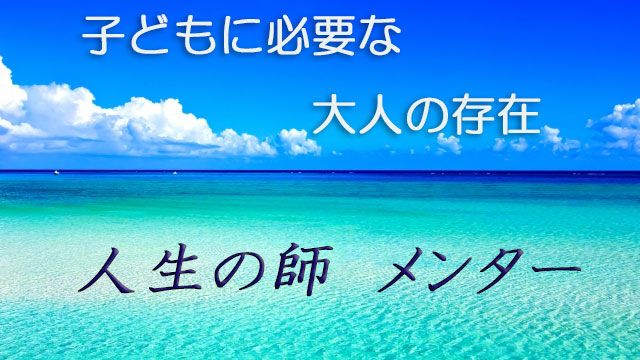

先日某高校の講演会に行って来ました。対象は主に高1の保護者ということで「高校生にとって大切な学びとは何か」について話したわけです。
ここで私は勉強も大切だが、それより人生を教えてくれる「良き師」との出会いのほうが、その後の人生を左右する意味でより重要だとお話しました。
良き師といえば学校の先生をまず思い浮かべるでしょうが、必ずしも先生に限りません。部活の先輩であったり、個人的に親しい友人の兄（姉）であったり、はたまた近所に住む大人、あるいは親類でも構いません。
要は親以外の信頼できる第三者―大人―であればよいのです。
できれば何でも聞けて話せる関係性が望ましい。
なぜなら子どもも思春期を過ぎるころになると、親の庇護を離れ「社会を教えてくれる」存在が必要になるからです。大人への準備段階として、大人世界の入口まで手を引いて導いてくれる存在―これをメンターと呼ぶ人もいる―が必要なのです。
なぜ親ではダメなのか。
それは簡単な話で、親にはこの時期の子どもに教えられないことがあるからです。
たとえば異性との関わり方。異性との交流やマナー、同性との違い、性（セックス）についての諸々な知識などは親は基本的に教えられません。子どものほうも親には聞けません。
もちろん異性の話は一部であって、むしろ人間社会における約束事、暗黙のルールや他者とのつき合い方全般が「師（メンター）」の教える内容となります。
その上で学問や文化、芸術などの知見があることも理想です。
実は思春期から20代前半までの若者には、これら大人社会への多くの疑問や好奇心があり、またそれらを貪欲に吸収したいあふれるばかりの探究心があります。
そこで適切な師にめぐり合い、人生全般のいわば「見取り図」を受け取ることで子どもは成長しやがてスムースに大人社会へ参入することができるのです。
このような師（メンター）に若いうちに出会うかどうかはその後の人生に大きく差がつくことは間違いありません。
個人的な話ですが私も中高生時代、何人かの尊敬できる師（私の場合は主に学校の先生）に出会ったことで「今の自分がある」と実感しています。
私の場合で言うなら特に「人間関係」が大きな学びでした。学びの内容は師の個性にも大きく関わりますが、私の先生がよく話されたのは「リーダーとは」「自己（エゴ）を滅して全体のために動くとは」など組織と個人に関するもので、図らずもその後の人間関係や仕事の成否につながる有益なものでした。
つまり「人としてのあり方」の基本を教えてもらったのです。
ここで大切なことは、人生の師というものは教師と生徒、上司と部下というように社会的（制度的）に固定された役割関係の枠からハミ出したものであるということ。もっと個人的で親密な関係性、いわば非公式な間柄における「本音」のやり取りこそが大切ということです。
別の言い方をすれば子どもがその人を師と認めれば、相手は誰だっていいのです。社会的な身分はどうでもよく、たとえその人が無職のアウトローであっても、名もない近所のオジさん(笑)であっても子どもたちに貴重な学びを伝え得るのです。
現に、共同体がしっかりと存在していた昭和30年代くらいまでは、年カサの者はたとえ知らない子どもであっても、悪さをする者を叱り良きふるまいをホメ、若者たちの「教育」に当たるのは日常でした。
さらに時代をさかのぼると、近代以前は各町村ごとに一定の年齢―14,15歳～17,18歳―の青少年を一ケ所に集めて、少し年上の青年たちが「人間社会のオキテ」や礼儀作法などを教えるのがふつうでした。
いわゆる若者宿とか娘宿（呼び名は地域で異なる）合宿形式ですね。
師―といっても少し上ぐらい―は時に厳しく時に優しく大人としてのふるまいをそこで教え、弟子（子ども）たちは数ヶ月～数年間親元を離れ最終的にたくましい大人となって戻ってくる。
いわばメンター制度のシステム化ですね。
つまり、昔から日常生活を共にしながら思春期くらいの子どもたちを育成する制度があったということは、それが必要だからであり親にはできない「人間教育」を担う伝統があったということです。
「現在はその代わり学校教育があるじゃないか」と言われそうですが、学校はあくまで知識教育であり勉強に特化している点が、人間教育中心のメンター教育とは違うところなんですね。
「しかし今どきそんなプライベートにまで踏み込んだ師弟関係など結べるだろうか!?」
「単なる理想ではないの？」
そう感じる向きもあるでしょう。
確かに学校の教師と生徒の関係にしても、職場での上司部下の関係、また近所の人間関係にしてもかつてのような「濃い」つき合いは難しくなっています。
ただ、だからこそ個人的に「教え・教わる」間柄、人間的なつながり―親密な交流―を通じての教育の必要性は逆に高まっていると思います。
その証拠にいま多くの企業が主に新入社員対象の「メンター制度」を導入しています。(厚生労働省の調査では大企業の半数、中小企業の6割がメンター制を導入しているという)
まあ、企業の場合は最近増えている新入社員の「定着の悪さ」や、かつてのような一律の新人研修の無意味化が背景にあると思いますが、それでも上司ではなくやや先輩の社員が後輩社員の悩みやプライベートな相談にものりながら共に目標を目指す形式を取り入れているのは注目に値します。
私は社会人になってからではなく、むしろ中学生、高校生のうちにメンター教育を行うべきだと感じていますが、世の中がクールで機能ばかり重視する時代になり人々の中に本来あるべき人間教育への希求が高まっていることは確実です。
さて冒頭の話に戻りましょう。
高校生の親たちに私が話したのは以上の点を踏まえ、我が子に対し一日も早く「尊敬できる大人」を探し出すよう激励して欲しいということでした。
もちろん学校の先生にそのような「師」を見い出すのが望ましいが、部活の先輩やＯＢでも大人びた友人でも構わないから、自分を高めてくれる信頼できる人間を見つけるよう子どもに促すことを強調したのです。
子ども自身が自らの直感で「この人だ！」という人物を探し求める姿勢が大切なのです。その上でその人の生き方そのものを学ぶつもりで交流すること。人生に対する好奇心と師を求める心。この２つがあれば出会いは必ず訪れるでしょう。
昔から言うように「弟子の準備ができたとき師は現れる」からです。